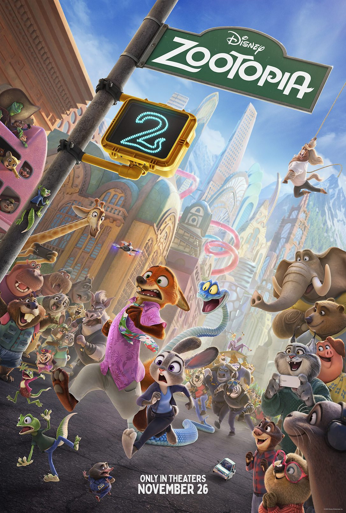

Life log
从一部电影开始…
一开始，其实只是想去看《疯狂动物城2》。后来这一天多出来了紫金山、明孝陵、恐怖密室、第一次身体接触，还有扶梯上那句很轻的“我喜欢你”。

一开始，其实只是想去看《疯狂动物城2》。
在这之前，我们已经在线上聊了很久。QQ 里总是有说不完的话，能聊到凌晨三四点，还觉得不够。可真正见面以后，反而一下子不知道该说什么了。
前一晚通宵。第二天早上，宿舍楼六点开门，我们就出发了。
她那天穿着那件斜着拉链、看起来有点怪怪的外套，还戴着口罩。后来相处久了我才知道，她其实不怎么化妆，所以再回头想那天，她好像还化了淡妆，就觉得有点好笑。明明平时不是这样的人，第一次见面还是偷偷认真了一下，还要“做作”“演”一下呢。哼。
从学校往校门口走，再坐地铁去紫金山的路上，我们一直都有点尴尬。明明线上那么能聊，线下却只能有一句没一句地找话题。那种感觉很奇怪，不是不熟，但又还没有熟到可以完全自然。
其实我们本来只安排了晚上看电影。白天那么长，不知道去哪儿，才临时决定先去紫金山。现在想想，这个决定很随便，但也正是因为这段“没规划好的白天”，才有了后面很多事情。
我记得最清楚的，是刚从明孝陵那边的地铁口出来。那时候我站在原地，有点发愣，也不知道该往哪走。她突然说：“不要站在原地不动啊喂。”然后两只手抱住我的右胳膊，粘着我，把我往前推着走。
那是我们的第一次身体接触。
我到现在还记得这一下。它不是很正式的那种牵手，也不是提前想好的什么动作，就是很自然地发生了。可从那以后，我们之间的感觉好像就变了。早上的尴尬还在，但已经不是完全陌生的尴尬了。
后来我们去了明孝陵，也爬了紫金山。其实我对具体走了哪些路、看了什么风景，记得反而没有那么清楚。我更记得的是，我们已经开始慢慢靠近了。那种靠近不是说出来的，是在她抱着我胳膊往前走的时候，是在我们一路试探着聊天的时候，一点点发生的。
也是在明孝陵的时候，我们聊到了密室。
其实我胆子特别小。
下了紫金山以后，我们真的去了。排队等入场的时候，因为要组队，有个一起来玩的小姐姐说：“我胆小，要跟着那对情侣。”她说的，是我们。
但那个时候，我们还不是情侣。
我当时听到这句话，心里应该是有点奇怪的。不是反感，而是那种被别人突然说中了什么的感觉。我们还没有正式在一起，但确实已经很暧昧了。其实我们两个人都在试探，只是谁都还没有把那句话真正说出来。
进密室以后，我是真的害怕。不是嘴上说说的那种害怕，是真的身体会抖。后来那个小姐姐也说，她碰到一个人在抖。那个在抖的人就是我。
中间有一次，需要有人单独离开队伍去完成额外任务。大家都很害怕，她却主动去了。她让我别害怕，说她一会儿就回来。
我当时嘴上还硬说自己不怕，让她不要担心，但其实我怕得要死。
从密室出来以后，我们在店外面的椅子上坐了很久。那家店在商场上面，还挺高的。我那时候好像真的有点吓傻了，整个人缓不过来，还一直在抖。
我趴在她怀里，嘴上还说自己不怕。其实根本不是不怕，只是不想让她太担心，也可能是觉得自己这样太丢脸了。
她侧躺在长椅上，轻轻把我搂在怀里，一下一下拍着我。她说后悔来这里，后悔去做那个单人任务，说应该留在那里陪着我。
这一段我记得很清楚。
密室里面到底发生了什么，我反而记不太清了。我只记得出来以后，她把我搂在怀里。我当时很害怕，但又觉得很安心。那种感觉很矛盾，一边觉得自己怎么这么怂，一边又觉得，她真的在很认真地护着我。
也就是这个时候开始，她，就是我的全世界。
后来我们从那个商场去了江宁万达，准备吃饭，看晚上的电影。
电影票原本早就买好了，是两张。但那天早上，我总觉得会发生什么，所以又退掉重新买了三张。多出来的那一张，是她旁边的座位。
我当时也说不清自己为什么要这样做，就是不想让别人坐在她旁边，不想有人打扰我们。现在想起来，这个动作其实挺明显的。嘴上还没说什么，心里已经先替我们留了一个位置。
到了万达以后，我们一边走一边聊天，还在纠结吃什么。表白不是突然发生的。我们之前一直在聊，只是聊着聊着，不知道怎么就到了那个地方。在她的“诱惑”下，我还是没忍住。
上扶手电梯快到上一层的时候，我悄悄凑到她耳边，小声说：“我喜欢你。”
这句话说得很轻，也不是那种很正式的表白。可我知道，我是真的说出口了。
她听完以后，表面上看不出什么。至少当时我看不出来。后来想想，她心里肯定没有那么平静。她还要“确认一下”，让我再说一遍。原话我已经记不清了，但我记得自己又认真说了一次。
后来我们去吃了新疆菜。吃饭以后，我们去看电影。那时候我们已经很暧昧了，会牵手，会靠近。她坐在我旁边，她另一边是我早上特意多买出来的那个空座位。
电影开始以后，灯暗下来。我其实没有只在看电影。那一天发生了太多事，从早上的尴尬，到地铁口她抱我的胳膊，到密室里她护着我，再到扶梯上我说“我喜欢你”。好像一整天都在慢慢往这里走。
所以她后来偷偷亲我的时候，我并没有觉得完全突然。
只是还是会觉得，讨厌。哼。
现在回头看，2025 年 11 月 30 日真的不像一次普通出门。它本来只是为了看一场电影，结果多出来了紫金山、明孝陵、恐怖密室、第一次身体接触、我在她怀里发抖，还有扶梯上的那句“我喜欢你”。
这一天没有安排得很好，也没有什么特别浪漫的计划。很多事情都是临时发生的，甚至有点笨，有点尴尬，有点狼狈。
但也正因为这样，我才觉得它很真实。
那天我们还没有完全弄清楚彼此的关系，但其实已经在一点点靠近了。很多话还没说出口，很多事情却已经先发生了。